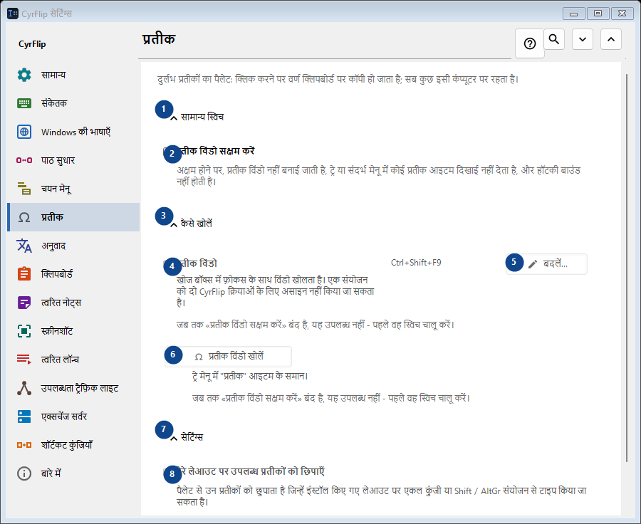
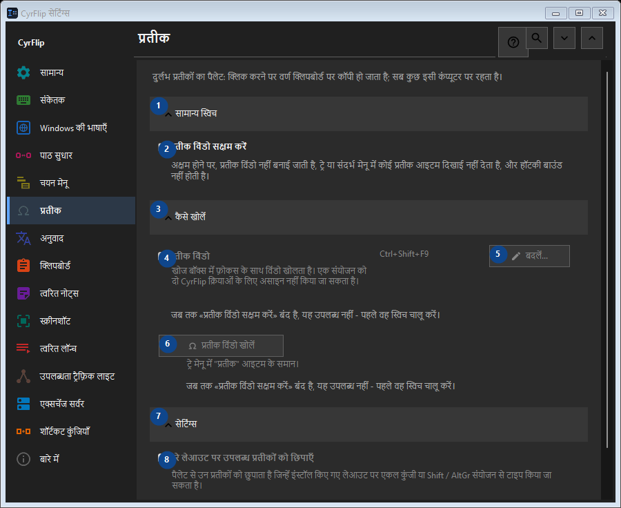

प्रतीक
इसका उपयोग
दुर्लभ प्रतीकों का पैलेट: क्लिक करने पर वर्ण क्लिपबोर्ड पर कॉपी हो जाता है; सब कुछ इसी कंप्यूटर पर रहता है।


उपयोग का क्रम
सेटिंग तुरंत लागू होती हैं। कोई अनिवार्य क्रम नहीं है; नीचे दिए समूहों का उपयोग करें।
तत्व
1. सामान्य स्विच
बताई गई कार्रवाई के लिए इस आदेश का उपयोग करें। स्वीकार करने से पहले पुष्टि पढ़ें।
आपके शॉर्टकट2. प्रतीक विंडो सक्षम करें
अक्षम होने पर, प्रतीक विंडो नहीं बनाई जाती है, ट्रे या संदर्भ मेनू में कोई प्रतीक आइटम दिखाई नहीं देता है, और हॉटकी बाउंड नहीं होती है।
आपके शॉर्टकट3. कैसे खोलें
बताई गई कार्रवाई के लिए इस आदेश का उपयोग करें। स्वीकार करने से पहले पुष्टि पढ़ें।
आपके शॉर्टकट4. प्रतीक विंडो
जब तक «प्रतीक विंडो सक्षम करें» बंद है, यह उपलब्ध नहीं - पहले वह स्विच चालू करें। यह तत्व अभी उपलब्ध नहीं है। पहले सुविधा चालू करें या कोई प्रविष्टि चुनें।
आपके शॉर्टकट5. बदलें - प्रतीक विंडो
जब तक «प्रतीक विंडो सक्षम करें» बंद है, यह उपलब्ध नहीं - पहले वह स्विच चालू करें। यह तत्व अभी उपलब्ध नहीं है। पहले सुविधा चालू करें या कोई प्रविष्टि चुनें।
आपके शॉर्टकट6. प्रतीक विंडो खोलें
जब तक «प्रतीक विंडो सक्षम करें» बंद है, यह उपलब्ध नहीं - पहले वह स्विच चालू करें। यह तत्व अभी उपलब्ध नहीं है। पहले सुविधा चालू करें या कोई प्रविष्टि चुनें।
आपके शॉर्टकट7. सेटिंग्स
बताई गई कार्रवाई के लिए इस आदेश का उपयोग करें। स्वीकार करने से पहले पुष्टि पढ़ें।
आपके शॉर्टकट8. मेरे लेआउट पर उपलब्ध प्रतीकों को छिपाएँ
जब तक «प्रतीक विंडो सक्षम करें» बंद है, यह उपलब्ध नहीं - पहले वह स्विच चालू करें। यह तत्व अभी उपलब्ध नहीं है। पहले सुविधा चालू करें या कोई प्रविष्टि चुनें।
आपके शॉर्टकट